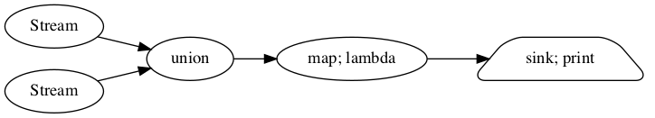

1. 流计算
dask的实时任务提交接口非常适合做流处理,通过结合streamz我们可以构造复杂的流处理系统.
流处理常用于处理数据流,构造数据处理管道.具体的内容我们后面数据科学部分再说.
1.1. 使用streamz做流处理
streamz的基本接口主要有如下几类:
1.1.1. 基本的的流处理结构
map(upstream, func, *args, **kwargs)用于将流中的每个数据分发给处理函数;Stream.emit(self, x[, asynchronous])用于将数据提交到流;sink(upstream, func, *args, **kwargs)则将函数应用于每个结果.
一个最简单最基本的流处理单元如下:
from streamz import Stream
def increment(x):
return x**2 + 1
source = Stream()
source.map(increment).sink(print)
for i in range(10):
source.emit(i)
1
2
5
10
17
26
37
50
65
82
1.1.2. 设置缓冲区防止流堵塞
由于机器的性能或者短时间内大量数据的涌入,流处理可能会堵塞,我们可以使用buffer(upstream, n, **kwargs)来设置一个缓冲区,以应付这种情况.在上一个节点未能处理完之前如果有新的节点进来,那么它会被放在缓冲区.
from streamz import Stream
def increment(x):
return x**2 + 1
source = Stream()
source.buffer(100).map(increment).sink(print)
for i in range(10):
source.emit(i)
1
2
5
10
17
26
37
50
65
82
1.1.3. 积累状态
使用接口accumulate(upstream, func[, start, …])可以积累流中的状态,类似reduce操作
from streamz import Stream
def increment(x):
return x**2 + 1
def add(x,y):
return x+y
source = Stream()
source.map(increment).accumulate(add).sink(print)
for i in range(10):
source.emit(i)
1
3
8
18
35
61
98
148
213
295
1.1.4. 操作流中元素
- 确保唯一性
可以使用unique(upstream[, maxsize, key, hashable])保证流中元素唯一性,这个接口可以设置maxsize参数 用于控制这个唯一性的范围(最近多少条没有重复),重复的元素则会被过滤掉;而参数key和python中其他itertools一样用于确定不重复的键如何取到.
source = Stream()
#source.unique(maxsize=1).sink(print)
source.unique(maxsize=4).sink(print)
for i in [1,2,3,2,3,2,2,4,5,6]:
source.emit(i)
print("##################")
source = Stream()
source.unique(maxsize=1).sink(print)
for i in [1,2,3,2,3,2,2,4,5,6]:
source.emit(i)
1
2
3
4
5
6
##################
1
2
3
2
3
2
4
5
6
- 过滤元素
可以使用filter(upstream, predicate, *args, **kwargs)来主动过滤一些符合条件的元素.
source = Stream()
source.filter(lambda x: x%2 == 0).sink(print)
for i in range(10):
source.emit(i)
0
2
4
6
8
- 将流数据压扁
类似spark中的flatten,flatten()也是一个功能,
source = Stream()
source.flatten().sink(print)
for i in [[1, 2, 3], [4, 5], [6, 7, 7]]:
source.emit(i)
1
2
3
4
5
6
7
7
- 延迟处理
借助事件循环,我们可以使用delay(upstream, interval, **kwargs)接口来推迟执行的时间.
source = Stream()
source.delay(1).filter(lambda x: x%2 == 0).sink(print)
for i in range(10):
source.emit(i)
0
2
4
6
8
- 固定时间间隔执行
rate_limit(upstream, interval, **kwargs)可以实现这个功能,它可以用于平稳流的执行.
import time
source = Stream()
source.rate_limit(interval=1).sink(print)
for i in range(10):
source.emit(i)
0
1
2
3
4
5
6
7
8
9
1.1.5. 截断缓存流
流处理一个很重要的功能就是计算序列中元素附近的一些统计量,这种时候截断与缓存就相当有用了.
- 每隔一定数量截断流构建元素
partition(upstream, n, **kwargs) 可以实现这个功能,不过一旦停止,多出来的元素会被抛弃
source = Stream()
source.partition(n=3).sink(print)
for i in range(10):
source.emit(i)
(0, 1, 2)
(3, 4, 5)
(6, 7, 8)
- 将元素保存在缓存中
streamz.collect(upstream, cache=None, **kwargs)可以将流中的元素保存到缓存中,并在调用对象的flush时将它们作为集合发出并清空缓存.
source1 = Stream()
source2 = Stream()
collector = source1.collect()
collector.sink(print)
source2.sink(collector.flush)
for i in range(10):
source1.emit(i)
source2.emit('anything')
(0, 1, 2, 3, 4, 5, 6, 7, 8, 9)
我们也可以设置cache参数,通常我们使用一个deque来限定缓存长度.外部定义的缓存也可以在流处理外部使用,这通常用于保存近期数据
from collections import deque
cache = deque([],5)
source1 = Stream()
source2 = Stream()
collector = source1.collect(cache=cache)
collector.sink(print)
source2.sink(collector.flush)
for i in range(10):
source1.emit(i)
print(len(cache))
source2.emit('anything')
1
2
3
4
5
5
5
5
5
5
(5, 6, 7, 8, 9)
cache
deque([])
- 按元素个数窗口截断并缓存元素
sliding_window(upstream, n, return_partial=True, **kwargs)可以实现这个功能,它会保存当前元素和最近的(n-1)个元素组成tuple构成一个新的元素,参数return_partial=True意味着在流开始时,元素前面元素不足够的情况下也会被构成tuple.
source = Stream()
source.sliding_window( n=3, return_partial=True).sink(print)
for i in range(10):
source.emit(i)
(0,)
(0, 1)
(0, 1, 2)
(1, 2, 3)
(2, 3, 4)
(3, 4, 5)
(4, 5, 6)
(5, 6, 7)
(6, 7, 8)
(7, 8, 9)
source = Stream()
source.sliding_window( n=3, return_partial=False).sink(print)
for i in range(10):
source.emit(i)
(0, 1, 2)
(1, 2, 3)
(2, 3, 4)
(3, 4, 5)
(4, 5, 6)
(5, 6, 7)
(6, 7, 8)
(7, 8, 9)
- 按时间窗口截断并缓存元素
timed_window(upstream, interval, **kwargs)可以实现这个功能.它与上面sliding_window不同之处就在于它是按时间截取,注意参数interval单位是秒.要注意一旦使用这个接口,它会启动一个事件循环来控制时间.
import time
source = Stream()
source.timed_window( interval=3).sink(print)
for i in range(30):
time.sleep(0.5)
source.emit(i)
[]
[0, 1, 2, 3, 4]
[5, 6, 7, 8, 9, 10, 11]
[12, 13, 14, 15, 16]
[17, 18, 19, 20, 21, 22, 23]
[24, 25, 26, 27, 28, 29]
[]
[]
[]
1.1.6. 组合流
python有生成器本身其实已经有一定的流操作能力,那为什么要用streamz呢,用它更多的是为了构造复杂的流组合.在业务上流操作也时常需要组合,比如计算一个
流分叉
我们的source对象可以用于构造流处理的计算图,
def increment(x):
return x + 1
def decrement(x):
return x - 1
source = Stream()
a = source.map(increment).sink(print)
b = source.map(decrement).sink(print)
b.visualize(rankdir='LR')
for i in range(5):
source.emit(i)
1
-1
2
0
3
1
4
2
5
3
流合并
union(*upstreams, **kwargs)将不同的流做合并操作
source1 = Stream()
source2 = Stream()
view = source1.union(source2).map(lambda x: x**2).sink(print)
view.visualize(rankdir='LR')

for i,j in zip(range(10),range(20,30)):
source1.emit(i)
source2.emit(j)
0
400
1
441
4
484
9
529
16
576
25
625
36
676
49
729
64
784
81
841
combine_latest(*upstreams, **kwargs)将不同流的最后两个元素组成tuple后合并,注意这个接口只要有一条流中有新数据传入就会触发计算
source1 = Stream()
source2 = Stream()
source1.combine_latest(source2).sink(print)
for i,j in zip(range(10),range(20,30)):
source1.emit(i)
if j%2==0:
source2.emit(j)
(0, 20)
(1, 20)
(2, 20)
(2, 22)
(3, 22)
(4, 22)
(4, 24)
(5, 24)
(6, 24)
(6, 26)
(7, 26)
(8, 26)
(8, 28)
(9, 28)
zip(*upstreams, **kwargs)将不同流按次序对齐并组成tuple,这个行为和python默认的zip一致,只是这个接口会丢弃无法对齐的数据
source1 = Stream()
source2 = Stream()
source1.zip(source2).sink(print)
for i,j in zip(range(10),range(20,30)):
source1.emit(i)
if j%2==0:
source2.emit(j)
(0, 20)
(1, 22)
(2, 24)
(3, 26)
(4, 28)
zip_latest(lossless, *upstreams, **kwargs)这个接口会保证所有元素都被放出来,并且最长的一条不会重
source1 = Stream()
source2 = Stream()
source1.zip_latest(source2).sink(print)
for i,j in zip(range(10),range(20,30)):
source1.emit(i)
if j%2==0:
source2.emit(j)
(0, 20)
(1, 20)
(2, 20)
(3, 22)
(4, 22)
(5, 24)
(6, 24)
(7, 26)
(8, 26)
(9, 28)
递归与反馈
.connect(downstream)和.disconnect(downstream)可以用于将流连接起来,这常用于构造递归与反馈循环,下面的例子我们构造一个流用于遍历我们的文件系统
from streamz import Stream
from pathlib import Path
source = Stream()
my_path = source.unique()
my_path.sink(print)
def inner_dir(x):
p = Path(x)
return [str(i) for i in p.iterdir()]
content = my_path.filter(lambda x: Path(x).is_dir())
links = content.map(inner_dir).flatten()
links.connect(source) # pipe new links back into pages
source.emit('./')
./
分布式数据结构.ipynb
.DS_Store
mystream.png
source
source/collections-schedulers.png
README.ipynb
dask作为算力池.ipynb
code
code/.DS_Store
code/streaming
code/streaming/streaming_async.py
code/realtime
code/realtime/async_actor.py
code/realtime/.vscode
code/realtime/.vscode/settings.json
code/realtime/async_submit.py
实时任务提交.ipynb
README.md
.ipynb_checkpoints
.ipynb_checkpoints/分布式数据结构-checkpoint.ipynb
.ipynb_checkpoints/外部数据读取-checkpoint.ipynb
.ipynb_checkpoints/README-checkpoint.ipynb
.ipynb_checkpoints/流处理-checkpoint.ipynb
.ipynb_checkpoints/dask作为算力池-checkpoint.ipynb
.ipynb_checkpoints/实时任务提交-checkpoint.ipynb
mydask.png
流处理.ipynb
服务化.ipynb
1.2. 结合dask的实时流处理
最基础的流处理就是来一条处理一条的实时处理,这种模式模型最简单,但对系统的处理能力和网络io有较高要求,往往需要更多的资源.这个模式最知名的是storm框架.我们可以结合dask作为算力池直接利用集群算力来做实时流处理.
在streamz框架下,我们使用scatter()接口提交计算图,使用gather()接收流结果
1.2.1. 同步写法
def increment(x):
""" A blocking increment function
Simulates a computational function that was not designed to work
asynchronously
"""
time.sleep(0.1)
return x + 1
def write(x):
print(x)
from dask.distributed import Client
client = Client("localhost:8786",processes=False)
from streamz import Stream
source = Stream()
(source.scatter() # scatter local elements to cluster, creating a DaskStream
.map(increment) # map a function remotely
.buffer(5) # allow five futures to stay on the cluster at any time
.gather() # bring results back to local process
.sink(write)) # call write locally
for x in range(10):
source.emit(x)
1
2
3
4
5
6
7
8
9
10
1.2.2. 异步写法
异步写法下,sink接口的参数可以是一个协程函数
%%writefile code/streaming/streaming_async.py
import asyncio
import time
from dask.distributed import Client
from streamz import Stream
def increment(x):
""" A blocking increment function
Simulates a computational function that was not designed to work
asynchronously
"""
time.sleep(0.1)
return x + 1
async def write(x):
print(x)
async def f():
client = await Client("localhost:8786", processes=False, asynchronous=True)
source = Stream(asynchronous=True)
source.scatter().map(increment).rate_limit('500ms').gather().sink(write)
for x in range(10):
await source.emit(x)
if __name__ == '__main__':
asyncio.get_event_loop().run_until_complete(f())
Overwriting code/streaming/streaming_async.py
1.3. 批处理
更加常见的场景是使用流做批处理,我们当然可以直接使用上面的数据截断缓存方法来构造批数据,然后使用python函数处理.但显然这并不高效优雅.
另一种方式则是使用streamz提供的两种流数据结构
1.3.1. batch结构
batch结构用于构造由python数组组成的批数据,
from dask.distributed import Client
import json
from streamz import Stream
client = Client("localhost:8786",processes=False)
stream = Stream()
example = [{'name': 'Alice', 'x': 1, 'y': 2}]
batch = stream.to_batch(example=example)
batch.stream.scatter().map(json.dumps).gather().sink(print)
batch.emit(example)
[{"name": "Alice", "x": 1, "y": 2}]
1.3.2. dataframe结构,借助pandas,dask,甚至cupy
import pandas as pd
from streamz import Stream
from streamz.dataframe import DataFrame
stream = Stream()
df_sample = pd.DataFrame({'x': [1, 2, 3], 'y': [4, 5, 6]})
sdf = DataFrame(example=df_sample, stream=stream)
L = sdf.stream.scatter().map(lambda x: x["x"]**2+3).gather().sink(print)
sdf.emit(df_sample)
0 4
1 7
2 12
Name: x, dtype: int64
dataframe只能处理结构化数据,这个例子中我们首先使用pandas构造了一个dataframe的Scheme(设计方案),df_sample,后续的所有使用emit传入的dataframe就固定好了从流中解析出的是这个样式.这个例子可以看出我们可以构造数据类型dataframe来做批处理,但如何构造批呢?
1.3.3. 将流构造为批进行批处理
我们可以一批一批的处理数据了,但流并不会自己成为批数据,这时候我们就可以使用前面提到的截断缓存流数据的方法构造批数据了.这边以partition方法为例.
下面的例子的过程如下:
我们使用
partition(5)将流截断缓存为3个一组,再将这5个一组的流转换为批对象,接着将批对象转换为dataframe,然后用dataframe的接口求取每5个的value字段的均值.这定义了流数据批处理的整个过程在构造好这个处理流程后,我们提出流程的
stream对象,定义它的数据提交,收集和下沉过程.最后我们向流对象中喂入数据.
import pandas as pd
import random
from streamz import Stream
from dask.distributed import Client
from streamz.dataframe import DataFrame
# 定义流
client = Client("localhost:8786",processes=False)
stream = Stream()
# 定义批处理过程
keys = ["a","b","c"]
batch_sample = [{'key': "a", 'value': 20}]
batch = stream.partition(5).to_batch(example=batch_sample)
sdf = batch.to_dataframe()
process = sdf.value.mean()
# 定义数据提交,收集,下沉过程
process.stream.scatter().gather().sink(print)
# 向流中注入数据
for i in range(100):
stream.emit({"key":random.choice(keys),"value":random.randint(20,100)})
64.8
65.5
67.53333333333333
65.8
64.84
68.76666666666667
71.2
70.75
68.31111111111112
66.8
65.89090909090909
65.71666666666667
65.8
66.48571428571428
64.88
63.675
64.0
64.17777777777778
63.61052631578947
63.11